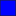

<!doctype html>
<html lang="en">
    <head>
        <meta charset="utf-8">
        <meta http-equiv="X-UA-Compatible" content="IE=edge">
        <meta name="viewport" content="initial-scale=1,user-scalable=no,maximum-scale=1,width=device-width">
        <meta name="mobile-web-app-capable" content="yes">
        <meta name="apple-mobile-web-app-capable" content="yes">
        <link rel="stylesheet" href="css/leaflet.css">
        <link rel="stylesheet" href="css/qgis2web.css"><link rel="stylesheet" href="css/fontawesome-all.min.css">
        <link rel="stylesheet" href="css/MarkerCluster.css">
        <link rel="stylesheet" href="css/MarkerCluster.Default.css">
        <style>
        #map {
            width: 1145px;
            height: 764px;
        }
        </style>
        <title>Demo Cours de WebGIS</title>
    </head>
    <body>
        <div id="map">
        </div>
        <script src="js/qgis2web_expressions.js"></script>
        <script src="js/leaflet.js"></script>
        <script src="js/leaflet.rotatedMarker.js"></script>
        <script src="js/leaflet.pattern.js"></script>
        <script src="js/leaflet-hash.js"></script>
        <script src="js/Autolinker.min.js"></script>
        <script src="js/rbush.min.js"></script>
        <script src="js/labelgun.min.js"></script>
        <script src="js/labels.js"></script>
        <script src="js/leaflet.wms.js"></script>
        <script src="js/leaflet.markercluster.js"></script>
        <script src="data/regions_be_2.js"></script>
        <script src="data/pharmacies_5.js"></script>
        <script src="data/aeroports_6.js"></script>
        <script src="data/water_surface_7.js"></script>
        <script>
        var map = L.map('map', {
            zoomControl:true, maxZoom:28, minZoom:1
        }).fitBounds([[50.79078549424272,4.217747836218739],[50.922299408405124,4.529585646441506]]);
        var hash = new L.Hash(map);
        map.attributionControl.setPrefix('<a href="https://github.com/tomchadwin/qgis2web" target="_blank">qgis2web</a> &middot; <a href="https://leafletjs.com" title="A JS library for interactive maps">Leaflet</a> &middot; <a href="https://qgis.org">QGIS</a>');
        var autolinker = new Autolinker({truncate: {length: 30, location: 'smart'}});
        var bounds_group = new L.featureGroup([]);
        function setBounds() {
        }
        map.createPane('pane_GoogleSatellite_0');
        map.getPane('pane_GoogleSatellite_0').style.zIndex = 400;
        var layer_GoogleSatellite_0 = L.tileLayer('https://mt1.google.com/vt/lyrs=s&x={x}&y={y}&z={z}', {
            pane: 'pane_GoogleSatellite_0',
            opacity: 1.0,
            attribution: '<a href="https://www.google.at/permissions/geoguidelines/attr-guide.html">Map data ©2015 Google</a>',
            minZoom: 1,
            maxZoom: 28,
            minNativeZoom: 0,
            maxNativeZoom: 20
        });
        layer_GoogleSatellite_0;
        map.addLayer(layer_GoogleSatellite_0);
        map.createPane('pane_OSMStandard_1');
        map.getPane('pane_OSMStandard_1').style.zIndex = 401;
        var layer_OSMStandard_1 = L.tileLayer('http://tile.openstreetmap.org/{z}/{x}/{y}.png', {
            pane: 'pane_OSMStandard_1',
            opacity: 1.0,
            attribution: '<a href="https://www.openstreetmap.org/copyright">© OpenStreetMap contributors, CC-BY-SA</a>',
            minZoom: 1,
            maxZoom: 28,
            minNativeZoom: 0,
            maxNativeZoom: 19
        });
        layer_OSMStandard_1;
        map.addLayer(layer_OSMStandard_1);
        function pop_regions_be_2(feature, layer) {
            var popupContent = '<table>\
                    <tr>\
                        <td colspan="2">' + (feature.properties['fid'] !== null ? autolinker.link(feature.properties['fid'].toLocaleString()) : '') + '</td>\
                    </tr>\
                    <tr>\
                        <td colspan="2">' + (feature.properties['REGION_NAM'] !== null ? autolinker.link(feature.properties['REGION_NAM'].toLocaleString()) : '') + '</td>\
                    </tr>\
                </table>';
            layer.bindPopup(popupContent, {maxHeight: 400});
        }

        function style_regions_be_2_0() {
            return {
                pane: 'pane_regions_be_2',
                opacity: 1,
                color: 'rgba(35,35,35,1.0)',
                dashArray: '',
                lineCap: 'butt',
                lineJoin: 'miter',
                weight: 1.0, 
                fill: true,
                fillOpacity: 1,
                fillColor: 'rgba(255,179,57,1.0)',
                interactive: true,
            }
        }
        map.createPane('pane_regions_be_2');
        map.getPane('pane_regions_be_2').style.zIndex = 402;
        map.getPane('pane_regions_be_2').style['mix-blend-mode'] = 'normal';
        var layer_regions_be_2 = new L.geoJson(json_regions_be_2, {
            attribution: '',
            interactive: true,
            dataVar: 'json_regions_be_2',
            layerName: 'layer_regions_be_2',
            pane: 'pane_regions_be_2',
            onEachFeature: pop_regions_be_2,
            style: style_regions_be_2_0,
        });
        bounds_group.addLayer(layer_regions_be_2);
        map.addLayer(layer_regions_be_2);
        map.createPane('pane_elevation_srtm_bxl_3');
        map.getPane('pane_elevation_srtm_bxl_3').style.zIndex = 403;
        var img_elevation_srtm_bxl_3 = 'data/elevation_srtm_bxl_3.png';
        var img_bounds_elevation_srtm_bxl_3 = [[50.76473422832541,4.245151339080117],[50.91318957335163,4.481979083165213]];
        var layer_elevation_srtm_bxl_3 = new L.imageOverlay(img_elevation_srtm_bxl_3,
                                              img_bounds_elevation_srtm_bxl_3,
                                              {pane: 'pane_elevation_srtm_bxl_3'});
        bounds_group.addLayer(layer_elevation_srtm_bxl_3);
        map.addLayer(layer_elevation_srtm_bxl_3);
        map.createPane('pane_Espaces_verts_31370_4');
        map.getPane('pane_Espaces_verts_31370_4').style.zIndex = 404;
        var img_Espaces_verts_31370_4 = 'data/Espaces_verts_31370_4.png';
        var img_bounds_Espaces_verts_31370_4 = [[50.763657731045555,4.243517098432297],[50.9138486714058,4.480416216648922]];
        var layer_Espaces_verts_31370_4 = new L.imageOverlay(img_Espaces_verts_31370_4,
                                              img_bounds_Espaces_verts_31370_4,
                                              {pane: 'pane_Espaces_verts_31370_4'});
        bounds_group.addLayer(layer_Espaces_verts_31370_4);
        map.addLayer(layer_Espaces_verts_31370_4);
        function pop_pharmacies_5(feature, layer) {
            var popupContent = '<table>\
                    <tr>\
                        <td colspan="2">' + (feature.properties['POI_TXT_DU'] !== null ? autolinker.link(feature.properties['POI_TXT_DU'].toLocaleString()) : '') + '</td>\
                    </tr>\
                    <tr>\
                        <td colspan="2">' + (feature.properties['POI_TXT_FR'] !== null ? autolinker.link(feature.properties['POI_TXT_FR'].toLocaleString()) : '') + '</td>\
                    </tr>\
                    <tr>\
                        <td colspan="2">' + (feature.properties['POI_PZ_ID'] !== null ? autolinker.link(feature.properties['POI_PZ_ID'].toLocaleString()) : '') + '</td>\
                    </tr>\
                    <tr>\
                        <td colspan="2">' + (feature.properties['POI_T_TYPE'] !== null ? autolinker.link(feature.properties['POI_T_TYPE'].toLocaleString()) : '') + '</td>\
                    </tr>\
                    <tr>\
                        <td colspan="2">' + (feature.properties['PN_NAME_DU'] !== null ? autolinker.link(feature.properties['PN_NAME_DU'].toLocaleString()) : '') + '</td>\
                    </tr>\
                    <tr>\
                        <td colspan="2">' + (feature.properties['PN_NAME_FR'] !== null ? autolinker.link(feature.properties['PN_NAME_FR'].toLocaleString()) : '') + '</td>\
                    </tr>\
                    <tr>\
                        <td colspan="2">' + (feature.properties['MU_NAME_DU'] !== null ? autolinker.link(feature.properties['MU_NAME_DU'].toLocaleString()) : '') + '</td>\
                    </tr>\
                    <tr>\
                        <td colspan="2">' + (feature.properties['MU_NAME_FR'] !== null ? autolinker.link(feature.properties['MU_NAME_FR'].toLocaleString()) : '') + '</td>\
                    </tr>\
                </table>';
            layer.bindPopup(popupContent, {maxHeight: 400});
        }

        function style_pharmacies_5_0() {
            return {
                pane: 'pane_pharmacies_5',
        rotationAngle: 0.0,
        rotationOrigin: 'center center',
        icon: L.icon({
            iconUrl: 'markers/pharmacies_5.svg',
            iconSize: [23.56, 23.56]
        }),
                interactive: true,
            }
        }
        map.createPane('pane_pharmacies_5');
        map.getPane('pane_pharmacies_5').style.zIndex = 405;
        map.getPane('pane_pharmacies_5').style['mix-blend-mode'] = 'normal';
        var layer_pharmacies_5 = new L.geoJson(json_pharmacies_5, {
            attribution: '',
            interactive: true,
            dataVar: 'json_pharmacies_5',
            layerName: 'layer_pharmacies_5',
            pane: 'pane_pharmacies_5',
            onEachFeature: pop_pharmacies_5,
            pointToLayer: function (feature, latlng) {
                var context = {
                    feature: feature,
                    variables: {}
                };
                return L.marker(latlng, style_pharmacies_5_0(feature));
            },
        });
        var cluster_pharmacies_5 = new L.MarkerClusterGroup({showCoverageOnHover: false,
            spiderfyDistanceMultiplier: 2});
        cluster_pharmacies_5.addLayer(layer_pharmacies_5);

        bounds_group.addLayer(layer_pharmacies_5);
        cluster_pharmacies_5.addTo(map);
        function pop_aeroports_6(feature, layer) {
            var popupContent = '<table>\
                    <tr>\
                        <th scope="row">fid</th>\
                        <td>' + (feature.properties['fid'] !== null ? autolinker.link(feature.properties['fid'].toLocaleString()) : '') + '</td>\
                    </tr>\
                    <tr>\
                        <th scope="row">id</th>\
                        <td>' + (feature.properties['id'] !== null ? autolinker.link(feature.properties['id'].toLocaleString()) : '') + '</td>\
                    </tr>\
                    <tr>\
                        <th scope="row">newfield1</th>\
                        <td>' + (feature.properties['newfield1'] !== null ? autolinker.link(feature.properties['newfield1'].toLocaleString()) : '') + '</td>\
                    </tr>\
                    <tr>\
                        <th scope="row">vols-transatlantique</th>\
                        <td>' + (feature.properties['vols-transatlantique'] !== null ? autolinker.link(feature.properties['vols-transatlantique'].toLocaleString()) : '') + '</td>\
                    </tr>\
                    <tr>\
                        <th scope="row">IATA</th>\
                        <td>' + (feature.properties['IATA'] !== null ? autolinker.link(feature.properties['IATA'].toLocaleString()) : '') + '</td>\
                    </tr>\
                    <tr>\
                        <th scope="row">date-encodage</th>\
                        <td>' + (feature.properties['date-encodage'] !== null ? autolinker.link(feature.properties['date-encodage'].toLocaleString()) : '') + '</td>\
                    </tr>\
                    <tr>\
                        <th scope="row">url</th>\
                        <td>' + (feature.properties['url'] !== null ? autolinker.link(feature.properties['url'].toLocaleString()) : '') + '</td>\
                    </tr>\
                </table>';
            layer.bindPopup(popupContent, {maxHeight: 400});
        }

        function style_aeroports_6_0() {
            return {
                pane: 'pane_aeroports_6',
                radius: 4.0,
                opacity: 1,
                color: 'rgba(35,35,35,1.0)',
                dashArray: '',
                lineCap: 'butt',
                lineJoin: 'miter',
                weight: 1,
                fill: true,
                fillOpacity: 1,
                fillColor: 'rgba(231,113,72,1.0)',
                interactive: true,
            }
        }
        map.createPane('pane_aeroports_6');
        map.getPane('pane_aeroports_6').style.zIndex = 406;
        map.getPane('pane_aeroports_6').style['mix-blend-mode'] = 'normal';
        var layer_aeroports_6 = new L.geoJson(json_aeroports_6, {
            attribution: '',
            interactive: true,
            dataVar: 'json_aeroports_6',
            layerName: 'layer_aeroports_6',
            pane: 'pane_aeroports_6',
            onEachFeature: pop_aeroports_6,
            pointToLayer: function (feature, latlng) {
                var context = {
                    feature: feature,
                    variables: {}
                };
                return L.circleMarker(latlng, style_aeroports_6_0(feature));
            },
        });
        bounds_group.addLayer(layer_aeroports_6);
        map.addLayer(layer_aeroports_6);
        function pop_water_surface_7(feature, layer) {
            var popupContent = '<table>\
                    <tr>\
                        <td colspan="2">' + (feature.properties['gid'] !== null ? autolinker.link(feature.properties['gid'].toLocaleString()) : '') + '</td>\
                    </tr>\
                    <tr>\
                        <td colspan="2">' + (feature.properties['idsurfhyd'] !== null ? autolinker.link(feature.properties['idsurfhyd'].toLocaleString()) : '') + '</td>\
                    </tr>\
                    <tr>\
                        <td colspan="2">' + (feature.properties['idtsurf'] !== null ? autolinker.link(feature.properties['idtsurf'].toLocaleString()) : '') + '</td>\
                    </tr>\
                    <tr>\
                        <td colspan="2">' + (feature.properties['nom'] !== null ? autolinker.link(feature.properties['nom'].toLocaleString()) : '') + '</td>\
                    </tr>\
                    <tr>\
                        <td colspan="2">' + (feature.properties['naam'] !== null ? autolinker.link(feature.properties['naam'].toLocaleString()) : '') + '</td>\
                    </tr>\
                    <tr>\
                        <td colspan="2">' + (feature.properties['type'] !== null ? autolinker.link(feature.properties['type'].toLocaleString()) : '') + '</td>\
                    </tr>\
                    <tr>\
                        <td colspan="2">' + (feature.properties['type_nl'] !== null ? autolinker.link(feature.properties['type_nl'].toLocaleString()) : '') + '</td>\
                    </tr>\
                    <tr>\
                        <td colspan="2">' + (feature.properties['gestion'] !== null ? autolinker.link(feature.properties['gestion'].toLocaleString()) : '') + '</td>\
                    </tr>\
                    <tr>\
                        <td colspan="2">' + (feature.properties['fishing'] !== null ? autolinker.link(feature.properties['fishing'].toLocaleString()) : '') + '</td>\
                    </tr>\
                    <tr>\
                        <td colspan="2">' + (feature.properties['area'] !== null ? autolinker.link(feature.properties['area'].toLocaleString()) : '') + '</td>\
                    </tr>\
                    <tr>\
                        <td colspan="2">' + (feature.properties['area_m'] !== null ? autolinker.link(feature.properties['area_m'].toLocaleString()) : '') + '</td>\
                    </tr>\
                    <tr>\
                        <td colspan="2">' + (feature.properties['nom_court'] !== null ? autolinker.link(feature.properties['nom_court'].toLocaleString()) : '') + '</td>\
                    </tr>\
                    <tr>\
                        <td colspan="2">' + (feature.properties['korte_naam'] !== null ? autolinker.link(feature.properties['korte_naam'].toLocaleString()) : '') + '</td>\
                    </tr>\
                </table>';
            layer.bindPopup(popupContent, {maxHeight: 400});
        }

        function style_water_surface_7_0() {
            return {
                pane: 'pane_water_surface_7',
                opacity: 1,
                color: 'rgba(35,35,35,1.0)',
                dashArray: '',
                lineCap: 'butt',
                lineJoin: 'miter',
                weight: 1.0, 
                fill: true,
                fillOpacity: 1,
                fillColor: 'rgba(1,1,255,1.0)',
                interactive: true,
            }
        }
        map.createPane('pane_water_surface_7');
        map.getPane('pane_water_surface_7').style.zIndex = 407;
        map.getPane('pane_water_surface_7').style['mix-blend-mode'] = 'normal';
        var layer_water_surface_7 = new L.geoJson(json_water_surface_7, {
            attribution: '',
            interactive: true,
            dataVar: 'json_water_surface_7',
            layerName: 'layer_water_surface_7',
            pane: 'pane_water_surface_7',
            onEachFeature: pop_water_surface_7,
            style: style_water_surface_7_0,
        });
        bounds_group.addLayer(layer_water_surface_7);
        map.addLayer(layer_water_surface_7);
        map.createPane('pane_Rservesnaturellesetforestires_8');
        map.getPane('pane_Rservesnaturellesetforestires_8').style.zIndex = 408;
        var layer_Rservesnaturellesetforestires_8 = L.WMS.layer("https://wms.environnement.brussels/be_wms", "bruenvi_natural_reserve", {
            pane: 'pane_Rservesnaturellesetforestires_8',
            format: 'image/png',
            uppercase: true,
            transparent: true,
            continuousWorld : true,
            tiled: true,
            info_format: 'text/html',
            opacity: 1,
            attribution: '',
        });
        map.addLayer(layer_Rservesnaturellesetforestires_8);
            var title = new L.Control();
            title.onAdd = function (map) {
                this._div = L.DomUtil.create('div', 'info');
                this.update();
                return this._div;
            };
            title.update = function () {
                this._div.innerHTML = '<h2>Demo Cours de WebGIS</h2>';
            };
            title.addTo(map);
        var baseMaps = {};
        L.control.layers(baseMaps,{"Réserves naturelles et forestières": layer_Rservesnaturellesetforestires_8,' water_surface': layer_water_surface_7,' aeroports': layer_aeroports_6,' pharmacies': cluster_pharmacies_5,"Espaces_verts_31370": layer_Espaces_verts_31370_4,"elevation_srtm_bxl": layer_elevation_srtm_bxl_3,' regions_be': layer_regions_be_2,"OSM Standard": layer_OSMStandard_1,"Google Satellite": layer_GoogleSatellite_0,},{collapsed:false}).addTo(map);
        setBounds();
        L.ImageOverlay.include({
            getBounds: function () {
                return this._bounds;
            }
        });
        </script>
    </body>
</html>
